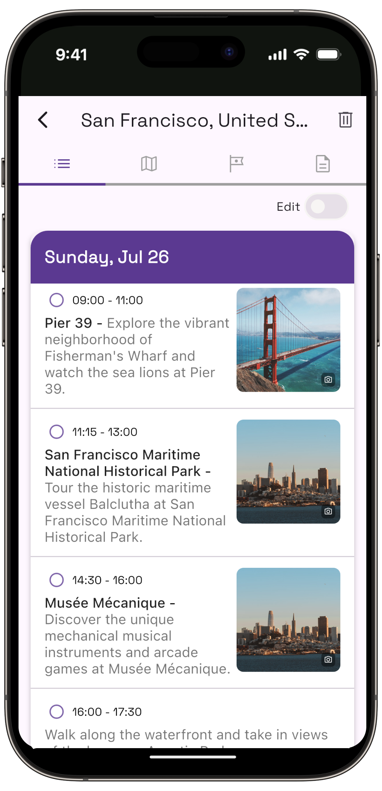

Berlin · 3 days
3 Days in Berlin: What You Actually Have to See
Berlin's must-see list is mostly memorials. The Holocaust Memorial, the Topography of Terror, the Wall at Bernauer Strasse: each one is free, central and genuinely essential, and each one leaves you flat for an hour afterwards. Stack three of them into one day, which is what most itineraries do because they sit a short walk apart, and by the third you are no longer taking anything in. So the trip is built on rationing. One era of the 20th century per day, one heavy site per day, and every one of them followed by something open-air and easy.
Three days is the right length for a first visit to Berlin. It covers the government quarter and the Reichstag dome, the Holocaust Memorial, the Berlin Wall at Bernauer Strasse and the East Side Gallery, Museum Island and the Topography of Terror, with enough left over for Tiergarten, a Kreuzberg evening and the Sunday market at Mauerpark if your dates include one. It does not cover Potsdam or Sachsenhausen.
The city is big and spread out, but distance is not the problem. The S-Bahn and U-Bahn are fast, and the essentials cluster in Mitte and a few neighbourhoods around it. The problem is what the essentials are. Unlike Rome or Paris, where the headline sights are buildings, most of what Berlin is famous for is a record of something terrible: the murder of Europe's Jews, the Gestapo and SS headquarters, the Wall and the people shot crossing it. These places are well made and they work on you. That is the point of them.
The common three-day plan ignores this. It runs Brandenburg Gate, the Holocaust Memorial, the Topography of Terror and Checkpoint Charlie back to back because they line up on a map, and by mid-afternoon the reader is skimming panels about deportation trains. The plan below spends one day on the Nazi era, one on the divided city and one on the older Prussian Berlin. Each day has one heavy site, placed where there is open space to walk off afterwards.
There is one date to check before anything else. Monday shuts most of the indoor history: the information centre under the Holocaust Memorial, the Wall Documentation Centre, the Tränenpalast and every museum on Museum Island. If a Monday falls in the trip, it gets the version of the day further down that only uses places that stay open.
One era per day, one memorial per day, and a walk after each. The Holocaust Memorial goes with Tiergarten, Bernauer Strasse with Mauerpark and the river, the Topography of Terror with a Kreuzberg evening. The heavy sites in this city are free and close together, which makes them easy to overload. Space them out and you will remember them.
Day 1 — The government quarter and the Holocaust Memorial
Start on the roof of the Reichstag. The glass dome is free, but it needs registration online in advance with each visitor's name and date of birth, and you show photo ID at the door. Walk-up slots exist at the service centre by the building, though only when places remain, and the confirmation has to be issued at least two hours before entry. Book it from home. The dome closes for cleaning for a week or two several times a year, and the dates are published on the Bundestag site; the roof terrace stays open when it does. Inside, a spiral ramp climbs around a mirrored cone that sends daylight down into the debating chamber below. Parliament sits under your feet.
Brandenburg Gate is a five-minute walk south. Look at it, then keep going, because it needs about as long as that takes.
The Memorial to the Murdered Jews of Europe is two blocks further. Above ground it is a field of 2,711 grey concrete slabs on a sloping, uneven floor, open day and night and free. Walk into the middle, where the slabs rise above head height and the city noise drops away. Underneath is the information centre, Tuesday to Sunday 10am to 6pm, which gives the memorial its names: rooms of letters and diaries, and a room where the names and short biographies of victims are read out one by one. It takes about an hour and a half. It is the most important thing on this day.
Afterwards, go straight into Tiergarten. The park starts across the road, and an hour walking west under the trees toward the Victory Column is how the afternoon should go. On the edge of the park nearest the Reichstag is the Soviet War Memorial, with two tanks on plinths. In the evening, eat somewhere around Hackescher Markt or Rosenthaler Platz, both a short ride from the centre.
The must-sees
One heavy stop at midday, with the Reichstag before it and a park after it. Everything here is walkable from the dome.
Day 2 — The Wall, from Bernauer Strasse to the river
Checkpoint Charlie is where most visitors go looking for the Wall, and it is the wrong place. The booth in the road is a replica, the strip around it is souvenir shops and fast food, and the costumed "soldiers" who charged for photos were banned by the city in 2019 after complaints that they were harassing tourists. Pass it if you are nearby. Do not build a morning around it.
Go to Bernauer Strasse instead. The Berlin Wall Memorial runs along the street for well over a kilometre and keeps the whole cross-section of the border: the outer wall, the patrol strip, a watchtower, and markers where escape tunnels ran underneath and where people died trying to get over. The houses on one side of this street stood in the East while the pavement in front of them was in the West, which is why people jumped from the windows in August 1961. The open-air grounds are free and open every day from 8am to 10pm. The Documentation Centre across the road has a viewing platform over the preserved strip and is closed on Mondays. Allow two hours.
Then walk ten minutes north to Mauerpark, a park laid out on part of the old death strip. On a Sunday it has the city's best-known flea market and, from about 3pm in decent weather, open-air karaoke in the stone amphitheatre with a crowd of hundreds. On any other day it is a park, and Prenzlauer Berg around it is the place for lunch.
If there is energy left, the Tränenpalast at Friedrichstrasse station is the short one. This was the hall where East Germans said goodbye to visitors leaving for the West, and the exhibition takes under an hour. It is free and closed on Mondays.
End at the East Side Gallery, the longest surviving stretch of the Wall, along the Spree in Friedrichshain and covered in murals painted in 1990. It is open-air and free. Walk it from Ostbahnhof toward the Oberbaum Bridge in the early evening, cross the bridge into Kreuzberg, and eat there.
The must-sees
The serious part of the day is in the morning, at Bernauer Strasse. From there it gets lighter all the way to the river.
Day 3 — Museum Island, then the Topography of Terror
The last day starts with the older city, which gives the morning some distance from the 20th century. Museum Island holds five museums on one island in the Spree. With three days, see one properly. That one is the Neues Museum, for the bust of Nefertiti and the Egyptian collection, in a building that was left a ruin after the war and restored with the damage still showing in its walls. It runs Tuesday to Sunday, 10am to 6pm. Booking a time slot online is the safe option in busy periods.
The famous one is shut. The Pergamonmuseum has been closed for renovation since October 2023, and the north wing with the Pergamon Altar is due to reopen on 4 June 2027. The Ishtar Gate and the Processional Way from Babylon are in a later phase and will not be back for years after that. Any itinerary still sending you to the Pergamon in 2026 was not checked.
From the island, walk out along Unter den Linden. At Bebelplatz there is a glass panel set into the ground, and under it a room of empty bookshelves. That is the memorial to the 1933 book burning, which took place on this square, and it takes a minute to see. The Gendarmenmarkt, with its two matching churches and the concert house between them, is a few blocks south and makes a good lunch stop.
Then the day's heavy site. The Topography of Terror stands on the ground where the Gestapo, the SS and the Reich Security Main Office had their headquarters, next to one of the few long sections of Wall still standing in the centre. The exhibition is free and indoors and open every day, 10am to 8pm, which is why it fits the late afternoon. It covers how the machinery of persecution was organised, from these offices, by the people who worked in them. Give it two hours. Then walk south into Kreuzberg for the last evening.
The must-sees
A lighter morning among older things, and the last memorial late in the day. The Topography of Terror is open until 8pm, so you can take it slowly.
If a Monday falls in the trip
| Closed on Mondays | Open on Mondays |
|---|---|
| Holocaust Memorial information centre | Holocaust Memorial slab field (always open) |
| Wall Documentation Centre at Bernauer Strasse | Bernauer Strasse open-air grounds, 8am to 10pm |
| Tränenpalast | Topography of Terror, 10am to 8pm |
| All museums on Museum Island | East Side Gallery, Tiergarten, Mauerpark |
A Monday does not cost you a day if you plan for it. Put the Wall there: the Bernauer Strasse grounds in the morning, Mauerpark, the East Side Gallery in the evening, with the Topography of Terror in the afternoon as the one indoor stop. The Holocaust Memorial and Museum Island move to the days either side.
What three days does not cover
These are worth doing, but each one costs time that this plan has already given to something else:
- Sachsenhausen. The concentration camp memorial at Oranienburg, reached by S-Bahn or regional train from the centre. It takes at least half a day and is the heaviest site in the region. Adding it to a three-day trip breaks the rule this plan is built on. Go on a fourth day, and make it the only thing that day.
- Potsdam. Sanssouci and the palace gardens make a full day out. Better as a fourth day than squeezed into the third.
- The TV Tower. It is the tallest view in the city, with timed tickets and a fee. The Reichstag dome is free and lower, but you can see the Reichstag from the tower, and the dome puts you inside the building and above the chamber. With one view to spare, take the dome.
- Charlottenburg Palace. The Hohenzollern summer palace and its baroque rooms, but it is out west and takes half a day. Museum Island covers that era for this trip.
- The other four museums on Museum Island. The Altes Museum, Bode-Museum and Alte Nationalgalerie are all good. Trying to fit two in one morning means doing both badly.
- Berlin after midnight. The clubs start when this itinerary ends. It is a different trip.
Common questions about 3 days in Berlin
Is 3 days enough for Berlin?
Yes for a first visit. Three days covers the Reichstag dome, the Holocaust Memorial, the Berlin Wall Memorial, the East Side Gallery, Museum Island and the Topography of Terror, with one heavy site per day. It does not leave room for Potsdam, Sachsenhausen or Charlottenburg Palace.
Is the Pergamon Museum open?
No. The Pergamonmuseum closed for renovation in October 2023. The north wing with the Pergamon Altar is scheduled to reopen on 4 June 2027, and the Ishtar Gate will follow in a later phase, years after that. For now, the Neues Museum with the bust of Nefertiti is the one to see on Museum Island.
Do you need to book the Reichstag dome?
Yes. Entry is free but requires registration in advance on the Bundestag website, with the name and date of birth of every visitor, and photo ID at the door. The service centre beside the building takes walk-up registrations only if places are left, and the confirmation must be issued at least two hours before your slot.
Which Berlin museums are closed on Mondays?
The museums on Museum Island, the information centre under the Holocaust Memorial, the Wall Documentation Centre at Bernauer Strasse and the Tränenpalast are all closed on Mondays. The Topography of Terror, the open-air Wall grounds at Bernauer Strasse, the Holocaust Memorial's slab field and the East Side Gallery stay open.
Is Checkpoint Charlie worth visiting?
Only in passing. The booth is a replica, the street around it is souvenir shops, and the costumed soldiers were banned in 2019. The Berlin Wall Memorial at Bernauer Strasse and the Tränenpalast are both free and explain the divided city far better.
Where is the best place to see the Berlin Wall?
Bernauer Strasse, for history. The Berlin Wall Memorial there preserves the whole border strip with its watchtower and patrol road, and is open daily from 8am to 10pm. The East Side Gallery is the longest surviving section and is covered in murals. It is better for an evening walk along the river than for understanding how the border worked.
Is the Holocaust Memorial free?
Yes. The field of concrete slabs is open around the clock and free. The information centre underneath is also free and is open Tuesday to Sunday from 10am to 6pm.
Tailored to your trip
Travelling to Berlin? Plan your trip around your real arrival and departure times.
